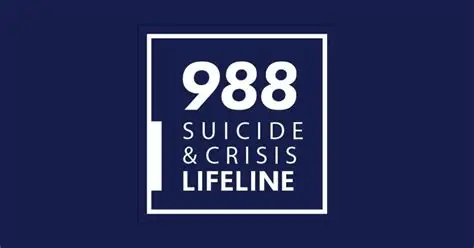
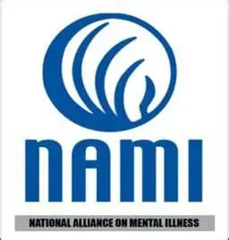

There are many orginizations and call lines available for americans nationally or internationaly (varied by Current Country).
Many organizations have call lines running locally and state-wide numbers too. Some lines like 988 are nationwide and are available for all.
See what availble below!

988 Lifeline
Whether you're facing mental health struggles, emotional distress, alcohol or drug use concerns,
or just need someone to talk to, caring counselors are here for you at 988. 988 is a national hotline
to where you can see any suicidal awareness information and how others can do their part in supporting those
who need help around the United States of America.
Check out 988's website for more information!
Sources of Strengths
Sources of Strength is a best practice, strength-based, upstream suicide prevention and mental health
promotion program that has shown effectiveness in both preventative upstream and intervention outcomes.
Sources offers exceptional training for both youth and adults in secondary schools and community-based
settings and has moved even further upstream with an elementary model featuring a fully stratified K-5 curriculum.
Check out Sources of Strengths and see how you can join the movement today!

National Alliance of Mental Illnesses (NAMI)
The National Alliance of Mental Illnesses (NAMI) is a Government funded Mental Awareness and Illness program nationwide!
At the NAMI Website, you can find your local NAMI office/building/institute, see events locally, statewide, and nationwide
to see how you can help and participate in other Mental Health events that support local fundraisers for awareness and treatments.
Check out the National Alliance of Mental Illnesses website today for more information!